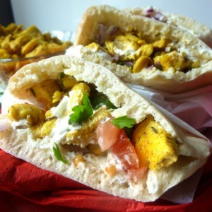
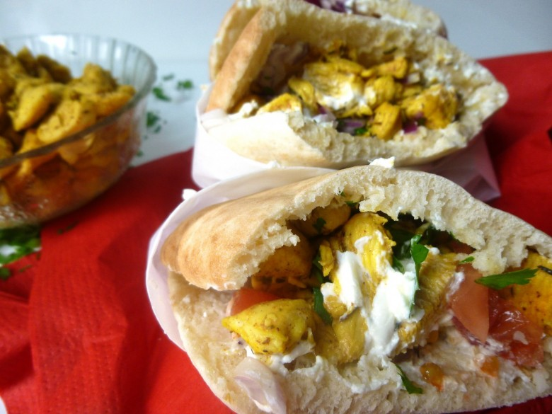

Sandwich chich taouk

Ici vous trouverez ma version du chich taouk
Le chich taouk est une recette d’origine libanaise. Cette recette est ultra simple car il s’agit tout simplement de poulet mariné .
J’ai découvert cette recette dans un très bon restaurant libanais sur Bordeaux.
Personnellement, j’aime beaucoup le servir dans un bon pain pita (dans une galette de blé ça doit être très bon aussi) mais vous pouvez tout aussi bien le servir avec des petits légumes, du boulgour ou même un peu de riz en accompagnement.
Cependant, vous trouverez le chich taouk principalement servi sous forme de brochettes (en même temps étymologiquement parlant en Turc cela signifie brochette de poule ^^).
J’espère que cette recette vous plaira et vous fera envie!
Ingrédients
- Blancs de poulet - 600 g
- huile d'olive - 3 càs
- citron - 1.5
- canelle - 1 cac
- cumin - 1 cac
- sumac (si vous en avez) - 1 cac
- piment doux (facultatif) - 1 cac
- safran - 1/2 dose
- pains Pita - 6
- tomate - 1
- oignon rouge - 1
- persil
Instructions
- Couper le poulet en morceaux
- Presser le citron (en fonction de la taille de vos citron il vous en faudra peut être plus mais pour moi 1 et demi suffisait)
- Dans une jatte, préparer la marinade : mélanger l'huile, le jus de citron et les épices
- Ajouter le poulet et mélanger de manière à ce que le poulet s'imprègne bien de la marinade
- Laisser reposer le temps que les saveurs s’entremêlent parfaitement (minimum 1h)
- Cuire à la poêle sans ajouter de matière grasse à feu moyen
- Pendant ce temps faites cuire vos pains
- Une fois les pains cuits tartiner les légèrement de cream cheese (c'est mon péché mignon^^)
- Ajouter en fonction du goût de chacun des tomates, oignons rouge (crus), persil, sinon nature c'est tout aussi bon
- Enfin, remplir les pains de poulets.
- Servez chaud!!

Les tips de la communauté
Recette très appréciée avec des commentaires unanimement positifs. Le poulet est délicieux selon les lecteurs, et la crème cheese est soulignée comme élément indispensable de la recette.
Astuces
- Utiliser de la crème cheese (Philadelphia ou équivalent) qui est indispensable pour la saveur
- Choisir des pitas de bonne qualité, de préférence la marque Leclerc